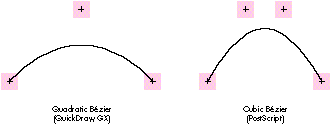
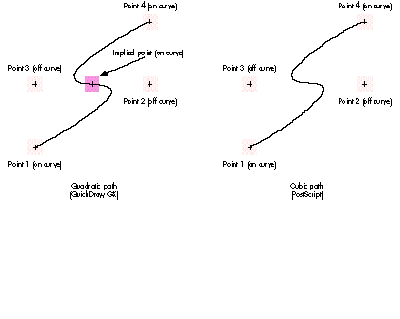
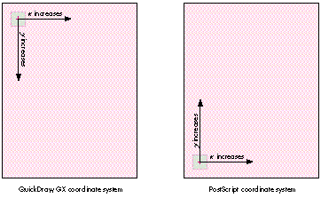
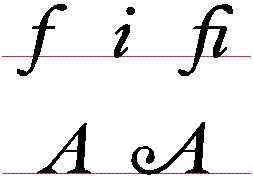
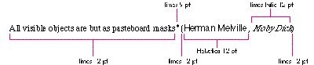
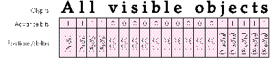

With QuickDraw GX, the Macintosh gets a brand new, powerful, and totally different
model for text and graphics. Programmers of graphics and page layout applications
accustomed to using custom PostScript code during the printing process will have to
learn new techniques for imaging on the Macintosh, but the reward is a robust feature
set, an easier API, and consistent output whether to a screen (of any resolution or
color depth) or a printer (PostScript, raster, or vector). This article should help
those programmers make the transition.
QuickDraw, while a powerful imaging model for its time and well suited for
interactive graphics on the screen, lacks many features demanded by today's users. To
provide features such as transformation (rotation, skewing, and so on) and Bézier
curves (ubiquitous in most modern graphics applications), applications in a
QuickDraw world must do much of the work of drawing to the screen themselves.
However, when printing to PostScript devices such as the Apple LaserWriter, these
applications can offload much of this work to the printer by simply using the
PostScript language to draw most, if not all, of their graphics and text. For this
reason, many Macintosh application programmers have also become PostScript
programmers and know how to get things done with the PostScript language.
Before getting into the details of how to make the transition from the PostScript
language to QuickDraw GX, you need to understand the two models. The article "Getting
Started With QuickDraw GX" in this issue of develop provides an introduction to
QuickDraw GX. For an overview of the features of the PostScript language, read on.
The PostScript language is probably best known as a robust graphics model with many
capabilities. These capabilities include the ability to fill or frame paths made up of
line and cubic Bézier segments, render continuous tone images in both color and
grayscale, transform graphics with a matrix, and clip to a path made up of line and
cubic Bézier segments. PostScript code can also draw text in a variety of different
typefaces and manipulate this text as a graphic.
To a limited extent the PostScript language is also a printing model. Certain operators
in the PostScript language are related to printing. These include operators for page
control (showpage and copypage), for controlling paper selection, and for
controlling device-specific features (setpagedevice in PostScript Level 2).
In addition, the PostScript language serves as a document interchange format. Since
it's so widely available on so many different platforms and printers, a PostScript file
can be treated as a device-independent document interchange. (However, it's not
easily edited except by an expert.) Similarly, it's also used to export clip art.
Encapsulated PostScript (EPS) files are widely used for exporting and importing
artwork into documents.
But the most important attribute of the PostScript language is that, more than a
graphics model, it's a programming language with most of the constructs of modern
high-level languages. The PostScript language is really a wrapper for the PostScript
graphics model. The graphics are invoked by operators in the language. This full
programmability makes it easy for programmers to extend the PostScript model to
meet their needs. If a desired feature isn't in the PostScript graphics model, it can
frequently be programmed in the PostScript language. For example, PostScript Level
1 doesn't contain patterns, but a PostScript procedure can be written to fill a
PostScript path with a pattern.
Due to this programmability, it's possible to emulate directly on PostScript printers
many of the QuickDraw GX features that aren't present in the PostScript graphics
model. When QuickDraw GX generates a PostScript stream, it includes a complex set of
PostScript procedures to do so.
This section compares QuickDraw GX and the PostScript language in terms of their
graphics, text- drawing, printing, and programming models.
THE GRAPHICS MODEL
Some differences between the QuickDraw GX and PostScript graphics models include
math types, Bézier curves, matrix transformation, and orientation of the y-axis.
Math types. Before entering the world of QuickDraw GX programming, a PostScript
programmer must understand the basic differences in how numbers are represented
by QuickDraw GX and the PostScript language.
The PostScript language uses floating-point numbers and QuickDraw GX uses
fixed-point numbers. The advantage to floating-point numbers is numeric range; the
advantage to fixed-point numbers is speed. With fixed-point numbers, addition and
subtraction are no slower than with regular integers. QuickDraw GX uses 16.16
fixed-point numbers (32-bit numbers with the high 16 bits representing the integer
portion and the low 16 bits representing the fractional portion).
In the PostScript language, color component values are represented by floating-point
numbers between 0.0 and 1.0. In QuickDraw GX, color component values are
represented by a type called colorValue, which is really a short such that 0x0000 is
0.0 and 0xFFFF is 1.0. QuickDraw GX also uses a type called fract. The fract type is
like the fixed type except that only the high two bits are the integer portion and the
low 30 bits are the fractional portion. This is generally used for numbers between -1
and 1 where fractional precision is important.
Curves. Both QuickDraw GX and the PostScript language support Bézier curves.
However, each supports a different kind (see Figure 1). While the PostScript language
uses cubics, GX uses quadratics. A cubic Bézier curve segment is defined by four
control points: a starting point on the curve, two points off the curve, and an ending
point on the curve. A quadratic Bézier curve is defined by three control points: a
starting point on the curve, a control point off the curve, and an ending point on the
curve.

Figure 1 Comparing Control Points on Bézier Curves
Figure 2 illustrates two similarly shaped paths. The one on the left is defined by two
quadratic segments, requiring five control points. The one on the right is defined by a
single cubic segment, requiring four control points. This seems to imply that in
drawing similar shapes, more points are required using quadratics than using cubics
and that, therefore, quadratics are at a disadvantage. However, to reduce data size, the
data structure for a QuickDraw GX path allows implied points. Each point in the
QuickDraw GX path has a control bit, indicating whether the point is on or off the
curve. If two consecutive points in the path are off the curve, there's an implied point
halfway between the two explicitly specified points. So, as shown in Figure 2, it's only
necessary to supply four points for the quadratic path, as the point between point 2
and point 3 is implicit.

Figure 2 Control Points for Paths
Matrix transformations. Both QuickDraw GX and the PostScript language allow
anything to be transformed through a matrix before being drawn. Both use a 3 x 3
transformation matrix. However, in the PostScript language the matrix has implicit
constant values in the last column, so there are only six degrees of freedom rather
than nine. QuickDraw GX allows you to specify all nine elements of the matrix.
To modify the current transformation matrix (CTM) by a given transformation, an
application may use the following PostScript code:
[ 4.17 0.0 0.0 -4.17 -1280.0 1650.5 ] concat
This code concatenates the following matrix with the CTM in the graphics state:
4.17 | 0.0 | 0.0 |
0.0 | -4.17 | 0.0 |
-1280.0 | 1650.5 | 1.0 |
QuickDraw GX has a data structure called gxMapping, which is a structure containing
one field. The field is a 3 x 3 array. The first two columns contain fixed-point
numbers and specify the skewing, scaling, rotation, and translation of the
transformation. The third column is made up of fractional numbers (numbers of type
fract) and specifies the perspective portion of the transformation. The following code
generates a mapping that's equivalent to the matrix in the PostScript code:
/* Declare a mapping structure (fract1 is a constant for 1.0 in
mathtypes.h). */
gxMapping aMapping =
{ { fl(4.17), fl(0.0), fl(0.0) }
{ fl(0.0), -fl(4.17), fl(0.0) }
{ -fl(1280.0), fl(1650.5), fract1 } };

Figure 3 Coordinate Systems
The y-axis. The y-axis orientation differs in the PostScript graphics model and
QuickDraw GX. In the PostScript model, the y-axis increases from the bottom of the
page or window to the top and in QuickDraw GX, as in QuickDraw, it increases from top
to bottom (see Figure 3).
OBJECT-BASED MODEL VERSUS STREAM-BASED PROTOCOL
A fundamental difference between graphics code for QuickDraw GX and PostScript code
is that QuickDraw GX is object-based and PostScript code is essentially a
stream-based protocol. Although the PostScript language is a programming language,
documents usually consist of a set of PostScript procedures followed by a stream that
invokes those procedures. Each model has advantages: With a stream-based protocol
the graphic content of any given page is virtually infinite. As long as PostScript code is
continuously streamed to the printer, it renders into the frame buffer untilshowpage
is issued -- which essentially says, "This page is done; start the next one." With an
object model it's relatively easy to share data between objects. A quick summary of
objects in QuickDraw GX illustrates this advantage.
QuickDraw GX objects. The shape object is the basic element of the QuickDraw GX
graphics model. A shape contains a geometry of any primitive type and points to three
other objects that describe how to render that geometry: the ink object, which
describes how to apply color to the geometry (as well as transfer mode); the style
object, which describes how to affect the geometry before rendering (pattern, dash,
and so on); and the transform object, which describes how to map and clip the
geometry before rendering. These objects can, in turn, point to other objects. For
example, a transform object points to a list of view port objects that describe where to
draw the geometry (such as in which window). An ink object points to a color profile
object that describes the colors in the ink in a device-independent manner. All the
previously described objects could also have lists of tag objects. A tag object is simply
a container for any data the application associates with the owning object.
Data sharing is extremely easy in this object model. If I have a picture made up of 100
different shapes and 30 of them have the same color, these 30 shapes can all point to
the same ink object. The color for these 30 shapes is stored only once. In a
stream-based protocol, it's only convenient to share data between consecutive items in
the stream. (You can write PostScript code that shares data between nonconsecutive
objects, but it's not easy.)
PostScript procedures and dictionaries versus QuickDraw GX objects.
Emulating the object model in PostScript code is possible because it's a programming
language. You could use PostScript dictionaries as containers for shapes and then have
a PostScript procedure that draws one of these dictionaries. The following is a simple
example of how this could work. (Warning: Serious PostScript code ahead.)
/aShape 7 dict def % Make a dictionary for the shape.
aShape begin % Put it on the dictionary stack.
/geometryProcedure { % Define a procedure for the geometry
newpath % to draw a rectangle.
100 100 moveto
0 100 rlineto
100 0 rlineto
0 -100 rlineto
closepath
} bind def
% Dictionary entries for transform.
/Transform [ 10 0 0 10 0 0 ] def
% Dictionary entries for the color.
/redComponent 1.0 def
/greenComponent 0.0 def
/blueComponent 1.0 def
/penWidth 5.0 def
/fillType (framed) def
end % Dictionary definition.
% The following procedure takes a shape dictionary and draws it.
/DrawShapeDict {
begin % Put the shape dictionary on the stack.
gsave % Shape shouldn't affect graphics state.
Transform concat % Apply transform.
redComponent greenComponent blueComponent setrgbcolor
% Set the color.
geometryProcedure % Execute the geometry procedure.
fillType (framed) eq { % If the shape is framed,
penWidth setlinewidth % set the pen width and
stroke % stroke the path.
} { % Else, fill the shape.
eofill
} ifelse
grestore
end
} bind def
% The following would be in the stream to draw the shape stored in
% the dictionary.
aShape DrawShapeDict
You could use PostScript code in this manner, but most printers have limited memory,
and memory management in PostScript printers is difficult (a subject for another
article), so it's usually not done.
Graphics state versus shape attributes. In a stream-based graphics model, a
graphics state determines how a particular item is drawn. In the PostScript language,
the graphics state attributes include the color, pen thickness, transformation matrix,
clip, miter limit, end caps, and joins that will be used to fill or stroke the current
path, bitmap, or text to be drawn. Applications using PostScript code must efficiently
manage the graphics state -- you never want to send more information to the printer
than necessary, but sending too little is fatal to the fidelity of the graphics. So, an
application emitting PostScript code must send the color for the item to be drawn only
if it's different from that of the last item drawn, and do similarly for pen thickness,
transformation matrix, and so on.
In the QuickDraw GX object-based model, every shape points to all the information
necessary to draw itself. An application merely needs to call GXDrawShape to draw the
shape properly with the designated color and pen thickness and other designated
characteristics. The application no longer has to keep track of the graphics state.
However, there's a different burden (though less cumbersome): making sure shape
objects share other objects when possible to reduce the memory used by the picture.
The following code samples effectively illustrate the difference between the two
models. Each sample draws two rectangles, one red and one blue, and offsets the second
one by (100, 100). First, here's the PostScript code:
/DrawRect {100 100 moveto 25 0 rlineto 0 25 rlineto -25 0 rlineto
closepath fill} bind def
gsave
1.0 0.0 0.0 setrgbcolor % Set the color red.
DrawRect
100 100 translate % Move the coordinate system by
100,100.
0.0 0.0 1.0 setrgbcolor % Set the color blue.
DrawRect
grestore
Now compare the QuickDraw GX code:
void GXDraw2Rectangles()
{
gxRectangle aRectangle =
{ ff(100), ff(100), ff(125), ff(125) };
gxShape rectShape;
gxInk redInk, blueInk;
gxColor aColor;
aColor.space = rgbSpace; /* Color will be RGB. */
aColor.profile = nil; /* No color profile. */
aColor.element.rgb.red = 0xFFFF;
aColor.element.rgb.green = 0x0000;
aColor.element.rgb.blue = 0x0000;
redInk = NewInk(); /* Make red ink. */
GXSetInkColor(redInk, &aColor);
aColor.element.rgb.red = 0x0000;
aColor.element.rgb.green = 0x0000;
aColor.element.rgb.blue = 0xFFFF;
blueInk = NewInk(); /* Make blue ink. */
GXSetInkColor(blueInk, &aColor);
rectShape = GXNewRectangle(&aRectangle);/* Create a shape. */
GXSetShapeInk(rectShape, redInk); /* Use red ink. */
GXDrawShape(rectShape); /* Draw it. */
/* Move it over and draw it in blue. */
GXMoveShape(rectShape, ff(100), ff(100));
GXSetShapeInk(rectShape, blueInk); /* Use blue ink. */
GXDrawShape(rectShape); /* Draw it. */
/* Clean up. */
GXDisposeShape(rectShape);
GXDisposeInk(blueInk);
GXDisposeInk(redInk);
}
The PostScript code uses a procedure to draw the rectangle. The procedure is analogous
to the shape object. However, each time the rectangle is drawn, the graphics state must
be modified to change the color and the transformation. At the end, the graphics state
for subsequently drawn items is blue and the origin is shifted by (100, 100) from the
original rectangle. Thegrestoreoperator is needed to set the graphics state back to
what it was to begin with.
The QuickDraw GX code created a shape, made it red, drew it, moved it, made it blue,
and drew it again. No global state was affected, only the shape itself. Moving the
rectangle with PostScript code necessitated modifying the graphics state's CTM. With
QuickDraw GX code, moving the rectangle involved only translating the shape's own
geometry with the GXMoveShape routine.
QuickDraw GX database versus PostScript container. In QuickDraw GX a
picture is a type of shape object whose geometry is a list of other shapes. Those shapes
in the list can also be picture shapes. Therefore, a QuickDraw GX picture shape is a
hierarchical database of shapes. This database can be queried and modified with
QuickDraw GX routines such as GXSetPictureParts, which inserts or replaces shapes
in a picture shape, and GXGetPictureParts, which retrieves shapes from a picture.
Since a picture can have objects that refer to each other, QuickDraw GX must have the
whole picture shape available at one time (although not actually in memory, but
rather in the disk-based backing store in low-memory conditions).
A PostScript file describing a picture is essentially a container for graphics. The file
contains all the data needed to draw the picture, but it can't be readily edited or queried
without having an interpreter for the PostScript language built into your application.
The PostScript stream-based protocol lets the device draw the stream on the fly.
Again, each model has its advantages. The object model is best suited for interactive
applications and the stream-based protocol is best suited for printers with limited
memory and no disk drives.
TEXT-DRAWING MODELS
QuickDraw GX contains three different types of shape objects for drawing text: the text
type, the glyph type, and the layout type. The text type is the simplest of the three,
although it's not the mostprimitive form. Drawing a text shape is similar to using the
PostScriptshow operator, as illustrated by the following code samples. First, here's a
PostScript "Hello World" program:
24 scalefont % Scale it to 24 points.
setfont % Make it the current font.
100 100 moveto % Move to location 100, 100.
(Hello World) show % Draw the text.
Now here's the QuickDraw GX "Hello World" program:
void GXHelloWorld(void)
{
gxShape helloShape;
gxFont aFont;
gxPoint location = {ff(100), ff(100)};
/* Find the font object for Times. */
aFont = FindPNameFont(fullFontName, "\pTimes Roman");
/* Make a text shape. */
helloShape = NewText(11, "Hello world", &location);
GXSetShapeFont(helloShape, aFont);
GXSetShapeTextSize(helloShape, ff(24));
GXDrawShape(helloShape);
GXDisposeShape(helloShape);
}
You can use these examples to help you get started with drawing text in QuickDraw GX.
They also show some similarities between the PostScript model and the QuickDraw GX
model. Both have font entities: in PostScript code it's a dictionary and in QuickDraw GX
code it's an object. In PostScript code, the font matrix entry in the dictionary itself is
scaled by thescalefontoperator to set the point size; in QuickDraw GX code, the point
size is contained in the shape's style and can be set by a call to GXSetShapeTextSize. For
the most part, that's it for similarities.

Figure 4 Different Glyphs From a Roman Font
Characters and glyphs. To understand the full capabilities of QuickDraw GX
typography, you must first understand the difference between characters and glyphs.
Characters are symbols that havelinguistic meaning, usually a letter from an alphabet.
Glyphs are renditions of those characters or combinations of them. For example, for
any given character from an alphabet, there may be various forms of this character
that are appropriate to draw at different times (see Figure 4).
The most complex text drawing in QuickDraw GX comes from the layout shape. With a
layout shape, the application specifies which characters in the language make up the
piece of text to be displayed. Given the language and script system specified in the
layout shape's style object, QuickDraw GX can then figure out which glyphs to use for
those characters.
The top line of Figure 4 shows three glyphs from a particular Roman font. They're the
glyphs for lowercasef , lowercasei, and a lowercase fi ligature. The ligature is an
example of a glyph that represents two characters. With a layout shape, QuickDraw GX
can detect when thei follows thef and automatically choose thefi ligature glyph when
drawing. This allows the user to typef followed by i rather than having to figure out
what key combination to type and what font to select to get thefi ligature.
The bottom line of Figure 4 illustrates another example of different glyphs for the
same character. The glyph on the left is the normal capitalA for that font. The glyph
on the right is a glyph to use at the beginning of the line. With a layout shape,
QuickDraw GX detects when the character is at the beginning of the line and
automatically chooses the correct glyph.
Platforms and encodings. In most versions of the PostScript language, any given
encoding of a font has access to only 256 glyphs at a time. If a font contains more than
256 glyphs, you must use different font dictionaries, each with a different encoding. In
effect, the application generating the PostScript code must select from different font
dictionaries to create all the glyphs in a given typeface. QuickDraw GX can take
advantage of fonts that contain up to 65535 glyphs, all of which are available to any
shape object.
The bytes contained in the geometry of a text, layout, or glyph shape can have different
meanings depending on the gxFontPlatform and gxFontScript attributes set in the style
object. When gxFontPlatform is set to gxMacintoshPlatform and gxFontScript is set to
gxRomanScript, the stream of bytes means the same thing it does on a Roman
Macintosh system today. If gxFontPlatform is set to gxGlyphPlatform, the bytes are
taken two at a time as a short and are treated as glyph indices in the font; a shape
object then has direct access to all the glyphs in a font. Each font indicates which
platforms, languages, and scripts it supports.
Positioning glyphs in a line of text. The PostScript language provides several
methods for allowing your application to explicitly position glyphs on a page. The
simplest is theshow operator. This operator simply draws each glyph specified by the
string and moves the current point by the advance width of that glyph. The ashow and
awidthshow operators allow the application to modify the advance width for all
glyphs or a particular glyph. With the kshow operator you can call a general
procedure between the drawing of each pair of glyphs specified by the string and the
procedure can modify the graphics state before drawing the next glyph. This process is
generally used for kerning. In kerning the procedure is passed the two character codes,
uses those two codes to look in a kerning table, and modifies the current point
appropriately. This method, while totally flexible, is difficult to use because the
application must parse font metric files to derive kerning tables to use with
thekshowprocedure.
PostScript Level 2 provides a way to position characters without executing a
procedure for each glyph drawn -- the xshow, yshow, and xyshow operators. With
these operators the application can specify an array of advance widths to use in place
of the built-in advance widths of the font. This is faster than using thekshowoperator.
Again, the application must generate the advance widths to use, usually by parsing font
metric tables and deriving kerning information.
It's possible for applications to generate PostScript code that uses the kshow operator
or the xshow, yshow, and xyshow operators to justify, kern, and track text. In
QuickDraw GX, a layout shape does this automatically, as specified by metrics in the
QuickDraw GX font. Each font contains tables that specify kerning pairs with kerning
amounts, optimal tracking values, and optimal choices for how justification should
occur. Your application can override these values if you choose, but the values in the
font are written by the font designer and therefore cause QuickDraw GX to position the
glyphs as the font designer intended. Your application need not parse the font metric
tables and position glyphs directly.
When you use layout or glyph shapes, text can have multiple style runs. This allows a
single shape object to switch between fonts, sizes, text faces, and languages as many
times as desired (see Figure 5).

Figure 5 A Shape Object With Multiple Style Runs
If you want the application to have direct control over positioning glyphs, use a glyph
shape object rather than a layout shape object. Glyph shapes bypass the automatic
positioning information. This approach is similar to using PostScript operators. When
using a glyph shape, you specify exactly which glyphs are to be drawn in what styles
and at what positions and angles. Then, when GXDrawShape is called, it uses this
information for rendering.
Using the positions and advance bits in a glyph shape, your application can draw the
glyphs anywhere on the page. Figure 6 illustrates some of the data in a glyph shape
with various values in the positions and advance bits. Where the advance bit is 1, the
value in the positions array is that glyph's absolute position on the page (before being
mapped through the shape's transform). Where the advance bit is 0, the value in the
positions array is an amount to add to the normal advance vector of the glyph. Not
shown in Figure 6 is the tangents array. Each glyph in a glyph shape object also has a
tangent vector that specifies an orientation for the glyph in addition to the position.

Figure 6 Some of the Data in a Glyph Shape
Given the tangent (Tx, Ty), the glyph is transformed through the following 2 x 2
matrix:
Tx | Ty |
-Ty | Tx |
It's important to note that glyph shapes don't do any character-to-glyph mapping, as
do layout shapes. They map character codes to glyph codes as specified by the
gxFontPlatform attribute in the style object, but they don't automatically pick
alternate forms of characters (ligatures, for example). If you use glyph shapes in
your application, you have to do nearly everything; however, glyph shapes provide the
most flexibility.
QuickDraw GX is language aware. When you use the layout type of shape objects,
QuickDraw GX is aware of the language and script as specified by the style object. This
allows QuickDraw GX to automatically run text, for example, from left to right for
English, right to left for Hebrew, and vertically for Chinese. Each font/language
combination has a set preference for which way to run text. Because the layout shape
can automatically determine where to position the glyphs based on the language, your
application can maintain the text for the shape in its linguistic order rather than the
display order.
QuickDraw GX also uses script-dependent information when justifying text. For
example, in English, justification involves adding or removing white space between
glyphs. In Arabic, glyphs are joined by horizontal lines called Kashidas. When
justifying Arabic text, QuickDraw GX automatically varies the length of the Kashida to
compensate for added or removed space in the text.
PRINTING MODELS
The printing models for QuickDraw GX and the PostScript language differ in much the
same ways as the graphics models do. PostScript code uses a stream-based protocol
while QuickDraw GX uses an object model.
PostScript stream-based printing. PostScript language elements invoke
various printing commands such as commands for choosing a particular type of paper
or a particular page orientation. With PostScript Level 1, some implementations added
operators for bin selection and other device-dependent features. PostScript Level 2
has thesetpagedeviceoperator, which is a generalization of this idea.
A PostScript stream that represents an actual document rather than a particular
encapsulated graphic has those various operators embedded between the pages to
instruct the printer page by page. In addition to operators, there's a defined protocol
for including comments in a PostScript stream to identify the document elements.
Some of these occur at the beginning of the stream and some of them occur between the
pages. They're called document structuring conventions (DSCs) and are described in
detail in thePostScript Language Reference Manual, Second Edition.
QuickDraw GX object-based printing. For each element of a printed document,
there's a corresponding QuickDraw GX object. Your application simply associates the
appropriate objects when spooling the document's pages and QuickDraw GX does the
rest. Your application need not worry about the details of paper trays and
transformation matrices to reorient the page.
Global document properties, such as the device information and the number of pages or
copies, are stored in the job object. Properties associated with a particular page are
stored in the format object. Each format object owns a paper type object.
The job object can be thought of as a context for the document that your application is
spooling. The format object contains information such as the page orientation
(portrait or landscape) and paper type (US Letter, Envelope, and so on). Each page
your application generates can have a different format associated with it. The job
object contains a default format that's used if a specific format isn't specified for a
page. All your application needs to do to set up the contents of these objects is call the
QuickDraw GX printing dialog boxes. The following code example shows how five pages
in one job can be printed with four different formats. (The contents of each page are
stored in a picture shape object.)
OSErr Print5Pages(shape page1, shape page2, shape page3, shape page4,
shape page5)
{
OSErr status;
EditMenuRecord myEditMenu;
gxFormat format1, format2, format3;
gxJob myJob;
DialogResult result;
status = GXNewJob(&myJob);
if (status != noErr) return (status);
/* Add code here to set up the Edit menu record. */
. . .
/* Use dialog box to set up default format for the job. */
result = GXJobDefaultFormatDialog(myJob, &myEditMenu);
if (result == okSelected) {
/* Create three separate formats for the first three
pages. */
format1 = GXNewFormat(myJob);
format2 = GXNewFormat(myJob);
format3 = GXNewFormat(myJob);
/* Bring up dialog box to set up page 1's format. */
result = GXFormatDialog(format1,
"\pPage Setup for Page 1", &myEditMenu);
if (result != okSelected) goto canceled;
/* Bring up dialog box to set up page 2's format. */
result = GXFormatDialog(format2,
"\pPage Setup for Page 2", &myEditMenu);
if (result != okSelected) goto canceled;
/* Bring up dialog box to set up page 3's format. */
result = GXFormatDialog(format3,
"\pPage Setup for Page 3", &myEditMenu);
if (result != okSelected) goto canceled;
/* Bring up the Job dialog box. */
result = GXJobPrintDialog(myJob, &myEditMenu);
if (result != okSelected) goto canceled;
/* Now spool the document. */
GXStartJob(myJob, "\pdevelop Article", 5);
GXPrintPage(myJob, format1, page1, 1);
GXPrintPage(myJob, format2, page2, 2);
GXPrintPage(myJob, format3, page3, 3);
GXPrintPage(myJob, nil, page4, 4);
/* Page 4 uses job's default format. */
GXPrintPage(myJob, nil, page5, 5);
/* So does page 5. */
GXFinishJob(myJob);
canceled:
GXDisposeFormat(format1);
GXDisposeFormat(format2);
GXDisposeFormat(format3);
}
status = GXGetJobError(myJob);
GXDisposeJob(myJob);
return (status);
}
This example calls the QuickDraw GX routines that present dialog boxes, allowing the
user to configure all the job and format properties. However, the QuickDraw GX
printing API allows the programmer to control these properties directly, if desired.
Using this API, your application can exert total control of all aspects of printing
without ever bringing up a dialog box!
This section shows you how to use QuickDraw GX to do some of those tricky things
you've figured out how to do with PostScript code.
FRAMING SOMETHING WITH A NONSQUARE PEN
QuickDraw has the concept of a nonsquare pen. You can set the width and height of the
pen independently. Both the PostScript language and QuickDraw GX have only one pen
dimension; however, you can simulate the framing of a path with a nonsquare pen.
Here's the PostScript code:
% Assuming there exists a path ready for drawing in the graphics
% state:
gsave % Save the current graphics state to muck with later.
1 setlinewidth % Set the current line width to 1.
xPen yPen scale % Scale the CTM by the pen width and pen height.
stroke % Stroke the path. The scaled matrix will scale the
% 1-unit line width by xPen in the x-axis and yPen in
% the y-axis when stroking. This produces the desired
% effect.
grestore % Put back the CTM and line width.
newpath % Clear the path since we did grestore after stroke.
Now, here's how to do it with QuickDraw GX:
void FrameNonSquare(gxShape theShape, fixed xPen, fixed yPen)
{
gxShape tempShape;
gxMapping aMapping;
gxTransform aTransform;
/* Make a copy of the shape to operate on. */
tempShape = GXCopyToShape(nil, theShape);
/* Make a new transform for the shape so it's scaled by the */
pen. */
aTransform = GXCopyToTransform(nil,
GXGetShapeTransform(tempShape));
GXScaleTransform(aTransform, xPen, yPen, 0, 0);
GXSetShapeTransform(tempShape, aTransform);
/* Make an inverse mapping to premap the shape so that when it's
scaled by the pen it will return to its original self. */
GXResetMapping(&aMapping); /* Set to identity. */
GXScaleMapping(&aMapping, FixedDivide(ff(1), xPen),
FixedDivide(ff(1), yPen), 0, 0);
GXMapShape(tempShape, &aMapping);
GXSetShapePen(tempShape, ff(1)); /* Set pen width to 1. */
GXDrawShape(tempShape); /* Draw it. */
GXDisposeShape(tempShape);
GXDisposeTransform(aTransform);
}
MODIFYING GLYPHS IN A FONT
The PostScript language allows you to modify the behavior of glyphs by changing
entries in the font dictionary, either directly or with themakefontoperator.
Oblique text. This PostScript code creates oblique text:
/Helvetica findfont 24 scalefont % Put 24-point Helvetica
% dictionary on the stack.
[1.0 0.0 -0.25 1.0 0.0 0.0] makefont % Skew the font dictionary.
setfont % Make it the current font.
This is how to do it with QuickDraw GX:
/* Modify the style object to do oblique text. */
void ObliqueText(gxStyle aStyle)
{
gxTextFace theFace;
gxTransform aTransform;
aTransform = GXNewTransform(); /* Make a transform. */
GXSkewTransform(aTransform, fix1/4, 0, 0, 0); /* Skew it. */
theFace.faceLayers = 1; /* Set text face to 1 layer. */
GXResetMapping(&theFace.advanceMapping);
/* Make advance mapping the identity mapping. */
theFace.faceLayer[0].outlineTransform = aTransform;
theFace.faceLayer[0].outlineStyle = nil;
theFace.faceLayer[0].boldOutset.x = 0;
theFace.faceLayer[0].boldOutset.y = 0;
theFace.faceLayer[0].outlineFill = gxSolidFill;
theFace.faceLayer[0].flags = 0;
GXSetStyleFace(aStyle, &theFace);
GXDisposeTransform(aTransform);
}
The text face data structure is used to modify the way glyphs are drawn. A text face can
have multiple layers and each layer can have a style (for patterns and so on), a
transform, a boldness, and a fill type. By using all of the fields and layers in the text
face, you can affect the drawing of text in all sorts of nasty ways. The next example
uses the fill type to simulate outline text.
Outline text. This code creates outline text in QuickDraw GX:
/* Modify the style object to do outline text. */
void OutlineText(gxStyle aStyle)
{
gxTextFace theFace;
gxStyle layerStyle;
theFace.faceLayers = 1; /* Set text face to 1 layer. */
GXResetMapping(&theFace.advanceMapping);
/* Make advance mapping the identity mapping. */
layerStyle = GXNewStyle();
GXSetStylePen(layerStyle, fix1/16); /* Make pen 1/16 point. */
theFace.faceLayer[0].outlineTransform = nil;
theFace.faceLayer[0].outlineStyle = layerStyle;
theFace.faceLayer[0].boldOutset.x = 0;
theFace.faceLayer[0].boldOutset.y = 0;
theFace.faceLayer[0].outlineFill = gxClosedFrameFill;
theFace.faceLayer[0].flags = 0;
GXSetStyleFace(aStyle, &theFace);
GXDisposeStyle(layerStyle);
}
To do the same thing with PostScript code, modify the font dictionary:
/Helvetica findfont % Put Helvetica's dictionary on the stack.
dup length 1 add dict begin
% Make a copy of the font dictionary and put it on the stack.
1 index /FID eq {pop pop} {def} if else
} forall
/PaintType 2 def % Make the font PaintType 2. This means stroked.
/StrokeWidth 1.0 16.0 div def % Make the stroke width 1/16.
currentdict
end
/HelveticaFramed exch definefont pop % Define the outlined font.
/HelveticaFramed findfont 24 scalefont setfont % Make it current.
CONVERTING FRAMED OBJECTS INTO FILLED OBJECTS
Sometimes you want a shape that, if filled, is the same as the result of stroking the
original shape. In PostScript code, calling strokepath on the current path applies the
current pen width to the path, and the resulting path is one that can be filled to
produce the result that calling stroke would have produced.
In QuickDraw GX, the GXPrimitiveShape routine applies the fill and style to any shape
to produce a primitive shape. A primitive shape is one that's completely described by
its geometry and fill and doesn't need a style object to be drawn properly. For example,
a path that's framed with a pen width of 10 becomes a solidFilled shape.
CONVERTING TEXT INTO A PATH
In the PostScript language, the charpath operator takes a string and converts it into
a path using the current font in the graphics state. The following code converts the
wordHello into a path using the font and font size of the current graphics state:
(Hello) false charpath
Any QuickDraw GX text, glyph, or layout shape object can be turned into a path shape
object by calling GXSetShapeType as follows:
GXSetShapeType(myTextShape, pathType);
This converts the shape object myTextShape into a path shape object by applying the
font, font size, and text face in the shape object's style object.
Whether or not you're familiar with the PostScript language, the preceding samples
and comparisons should help you get going on your QuickDraw GX application. In the
days of QuickDraw, you frequently had to resort to generating PostScript code from
your application because the graphics constructs simply didn't exist in QuickDraw.
However, QuickDraw GX is a robust graphics, text, and printing architecture that does
all the things that current drawing applications do and then some. There should be no
need to generate your own PostScript code from your application in the world of
QuickDraw GX. Using QuickDraw GX as the medium for all drawing also gives your
application the added benefit of being able to produce application-independent portable
digital documents. You can view portable digital documents with TeachText and print
them on any printer, PostScript or not. Enjoy!
DANIEL LIPTON, in addition to being an accomplished PostScript programmer, is an
avid animal lover. He lives with a variety of pets, most notably his dog SpotFunction.
As a result of many hours of training, SpotFunction can perform some impressive
tricks, including both "roll" and "loop." Dan's affinity for animals extends beyond the
canine domain to include his pet iguana, who can neither roll nor loop. Although
warm-blooded himself, Dan can often be found sunning himself on a rock outside his
office at Apple. "I find myself mysteriously drawn to the reptilian lifestyle," he
confesses, his eyes intently tracking a fly buzzing about his office. Dan is known to
break into fits of uncontrollable laughter whenever he's shown a picture of a gorilla, a
fact that his coworkers often use to their advantage during meetings. *
The definitive reference on the PostScript language is PostScript Language
Reference Manual, Second Edition (Addison- Wesley, 1990).*
There's more information on QuickDraw GX objects in the article "Getting
Started With QuickDraw GX" in this issue ofdevelop .*
THANKS TO OUR TECHNICAL REVIEWERS Pete ("Luke") Alexander, Tracey
Davis, Herb Derby, Dave Williams *